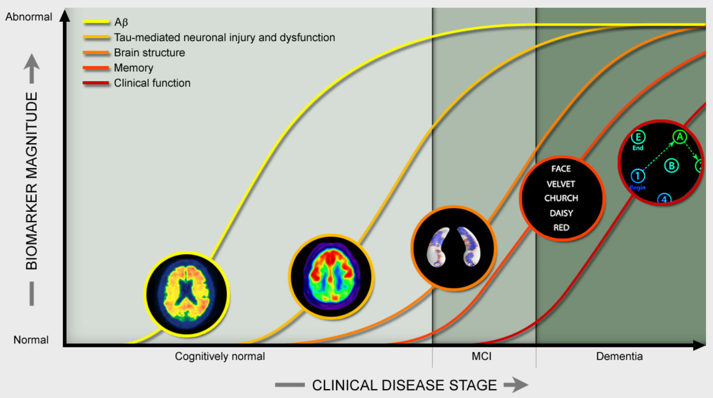
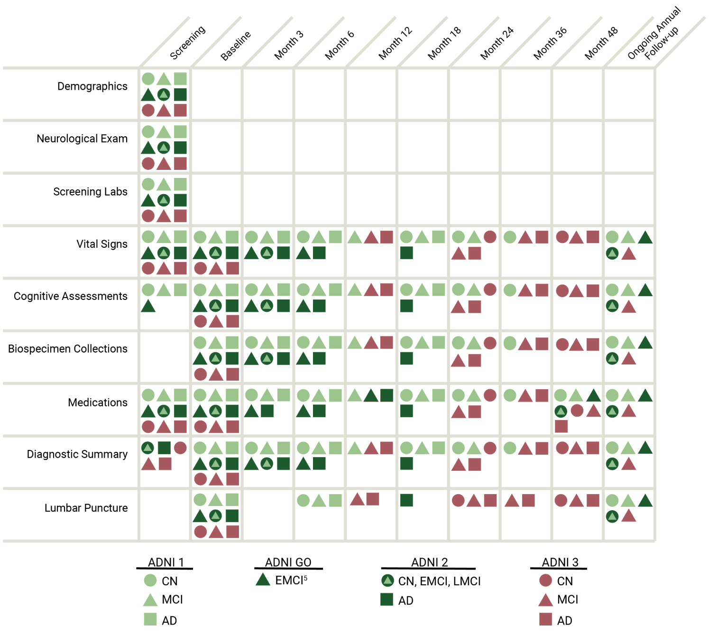
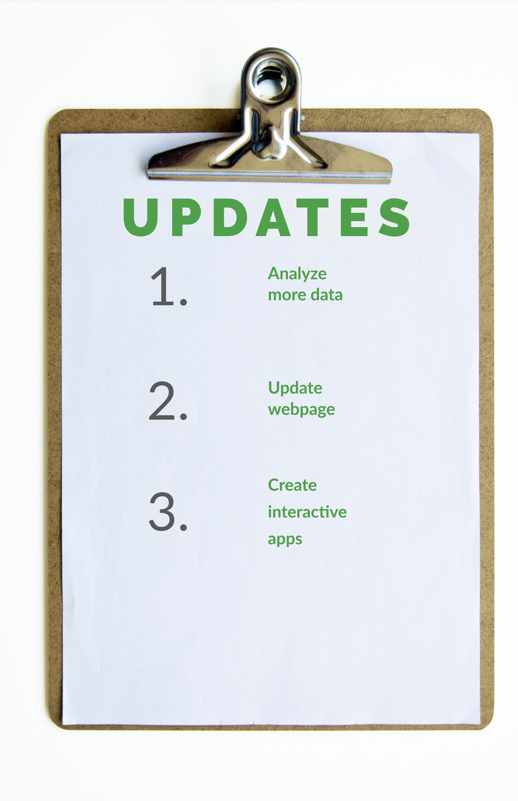
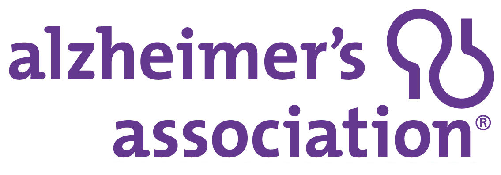

Overview
This is an in-progress research project at the interface of cognitive science and data science. Our aim is to create a web-based interactive tool for visualization, prediction, and classification of Alzheimer’s Disease, based on data from the Alzheimer’s Disease Neuroimaging Initiative (ADNI).
What is ADNI?


Images are taken from the ADNI webpage
Analysis
General Information:
Please be aware that the analyses includes data from ADNI 1, ADNI 2,ADNI 3, and ADNI Go.
Label keys:
- AD = Alzheimer’s Disease
- MCI = Mild Cognitive Impairment
- CN = Cognitive Normal (Healthy Older Adults)
- bl = baseline
- m12-m96 = 12 months - 96 months
- Biomarkers:
- Amyloid-Beta
- Tau
- P-Tau
- APOE-4 (0, 1, or 2 allele)
- Cognitive tests:
- Mini-mental state examination (MMSE) higher is better
- Montreal Cognitive Assessment(MoCA) higher is better
- Clinical Demential Rating Scale lower is better
- ADAS cognitve test 13 items lower is better
- RAVLT Immediate score higher is better
- Digit Span Score higher is better
- Brain Volume:
- Hippocampus
- Entorhinal cortex
- Middle Temporal
- Ventricles
- Intracranial Vault Volume
People
We are a group of graduate students at the University of Rochester who are part of the National Science Foundation Research Traineeship in Data Enabled Research into Human Behavior and its Cognitive and Neural Mechanisms. More information about this traineeship can be found at http://www.sas.rochester.edu/dsc/graduate/nrt.html
About the team
Greta Smith is a first-year data science MS candidate. Her research interests include data-driven advancement of healthcare and disease management. She received her bachelor’s degree in neuroscience from the University of Rochester in 2015.
Max Wasserman is a first year phd student in the Computer Science department. He completed a BSE in mechanical engineering at the University of Pennsylvania in 2015.
Ying Lin is a first-year Brain and Cognitive Sciences PhD student. She received her bachelor’s degree in behavioral neuroscience and Japanese from Colgate University in 2015.
Updates
Resources
There are about 1,700 publications that used the ADNI dataset. Graph shown on left is by Yao et al.(2017), article titled: "Mapping longitudinal scientific progress, collaboration and impact of the Alzheimer’s disease neuroimaging initiative"
Click Here for a list of publications.
Click Here for full article by Yao et al., 2017.

Association is one of the largest organizations that strives for Alzheimer's research, care, and support.
Click Here for more information.

All the interactive analysis are completed via R Shiny
Click Here for more information about Shiny.
Acknowledgements
Dr. Florian Jaeger for his guidance throughout the project.
Dr. Anton Porsteinsson for providing insightful and extensive background of ADNI.
Dr. Vankee Lin for her feedback during the earlier stage of our project.
Contacts
Ying Lin
Email: ylin78@ur.rochester.edu
Greta Smith
Email: gsmith21@ur.rochester.edu
Max Wasserman
Email: mwasser6@ur.rochester.edu